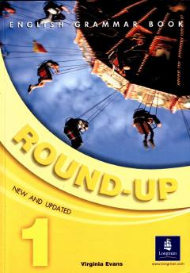

RUIngliz tili grammatikasini o'yinlar va mashqlar orqali o'rganish uchun boshlang'ich qo'llanma.
Ushbu kitob ingliz tilini endi o'rgan boshlayotganlar uchun mo'ljallangan bo'lib, qiziqarli o'yinlar va mashqlar yordamida grammatika qoidalarini mustahkamlaydi. Unda fe'llar, olmoshlar, ko'plik shakllari va asosiy zamonlar sodda tushuntirilgan. Kitobdan sinfda ham, uyda mustaqil ravishda ham foydalanish mumkin.